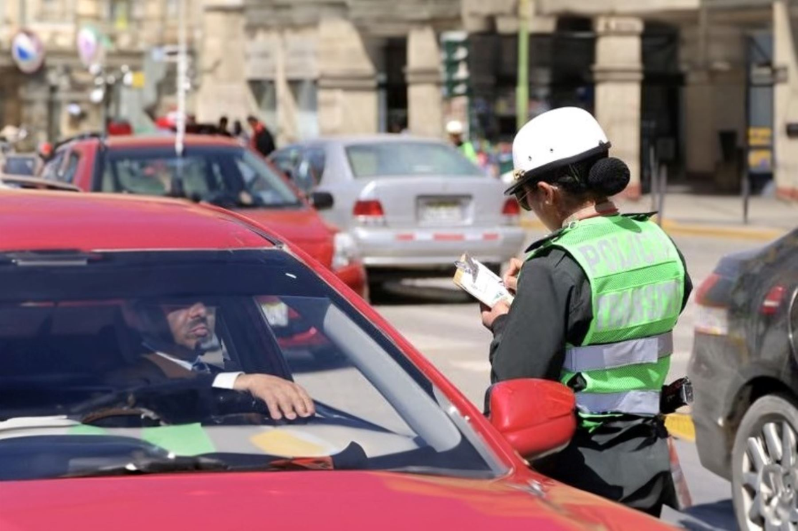

Cusco Reporta
La plataforma ciudadana para reportar infracciones de tránsito y situaciones que afectan la seguridad vial en nuestra ciudad.
Reportar ahora

¿Por qué usar Cusco Reporta?
Fácil y rápido
Registra una denuncia en minutos desde tu celular o computadora.
Seguro
Tus datos están protegidos. También puedes reportar de forma anónima.
Impacto real
Tu reporte contribuye a mejorar la seguridad vial en nuestra ciudad.